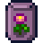

Magasin général de Pierre
| Magasin général de Pierre | |
 | |
| Heures d'ouverture : | 9:00 à 17:00 |
| Fermé : | Mercredi |
| Adresse : | Au nord de la place de la ville |
| Occupants : | |
Le Magasin général de Pierre est l'endroit où l'on peut acheter toutes sortes de graines, pieds d'arbres fruitiers, engrais et autres objets utiles à la ferme. Lorsque vous avez 8 coeurs d'amitié avec un prétendant au mariage, un bouquet de fleurs devient aussi disponible à l'achat. Une partie des produits en vente varie d'une saison à l'autre et les autres sont en stock toute l'année.
Vous pouvez directement vendre à Pierre des ressources sauvages, des récoltes, des produits artisanaux ou encore des produits d'origine animale en cas de besoin urgent de pièces d'or et si vous ne voulez pas attendre le soir pour l'expédition.
Astuce : Vous pouvez acheter une grande quantité d'objets rapidement en pressant Shift et en cliquant sur Bouton droit de la souris ou sur le pavé tactile en continu.
Au début du jeu, le magasin est fermé le mercredi. Cependant, si vous finissez les objectifs du Centre communautaire, le Magasin général de Pierre sera ouvert tous les jours de la semaine.
Vous pouvez entrer dans le magasin jusqu'à 21h mais Pierre quitte la caisse à 17h tous les jours. Il n'est donc pas possible d'acheter ou de vendre quoi que ce soit après 17h.
Stock à l'année
| Image | Nom | Description | Prix |
|---|---|---|---|
| Gazon | Placez-le dans votre ferme pour faire pousser une parcelle d'herbe. | ||
| Gazon (Recette) | Une recette pour faire : Gazon | ||
| Sucre | Ajoute une touche de douceur aux pâtisseries et aux bonbons. En mettre trop peut être mauvais pour la santé. | ||
| Farine de blé | Un ingrédient de cuisine banal à base de graines de blé écrasées. | ||
| Riz | Céréale de base souvent servie avec des légumes. | ||
| Huile | Huile de cuisson multi-usages. | ||
| Vinaigre | Un vieux liquide fermenté, utilisé dans de nombreuses recettes de cuisine. | ||
| Engrais de base | Améliore un peu la qualité du sol, augmentant vos chances de produire des récoltes de qualité. À mélanger dans un sol labouré. | ||
| Engrais de qualité | Améliore la qualité du sol, augmentant vos chances de produire des récoltes de qualité. À mélanger dans un sol labouré. (Disponible à partir de l'année 2) |
||
| Sol de rétention basique | Ce sol a une chance de rester irrigué pendant la nuit. À mélanger dans un sol labouré. | ||
| Sol de rétention de qualité | Ce sol a beaucoup plus de chance de rester irrigué pendant la nuit. À mélanger dans un sol labouré. | ||
| Engrais de croissance rapide | Stimule la production de feuilles. Taux de croissance garanti d'au moins 10 %. À mélanger dans le sol labouré. | ||
| Engrais de croissance rapide II | Stimule la production de feuilles. Taux de croissance garanti d'au moins 25 %. À mélanger dans le sol labouré. | ||
| Papier peint (Au hasard chaque jour) | Peut décorer les murs d’une pièce. | ||
| Revêtement de sol (Au hasard chaque jour) | Peut décorer le sol d’une pièce. | ||
| Jeune cerisier | Il faut 28 jours pour produire un cerisier mature. Porte des fruits au printemps. Ne se développe que si les 8 "carreaux" environnants sont vides. | ||
| Jeune abricotier | Il faut 28 jours pour produire un abricotier mature. Porte des fruits au printemps. Ne se développe que si les 8 "carreaux" environnants sont vides. | ||
| Jeune oranger | Il faut 28 jours pour produire un oranger mature. Porte des fruits en été. Ne se développe que si les 8 "carreaux" environnants sont vides. | ||
| Jeune pêcher | Il faut 28 jours pour produire un pêcher mature. Porte des fruits en été. Ne se développe que si les 8 "carreaux" environnants sont vides. | ||
| Jeune grenadier | Il faut 28 jours pour produire un grenadier mature. Porte des fruits à l’automne. Ne se développe que si les 8 "carreaux" environnants sont vides. | ||
| Jeune pommier | Il faut 28 jours pour produire un pommier mature. Porte des fruits à l’automne. Ne se développe que si les 8 "carreaux" environnants sont vides. | ||
| Catalogue | Donne un accès illimité aux papiers peints et aux sols… sans quitter le confort de votre maison ! | ||
| Bouquet | Un cadeau romantique. (Débloqué après avoir atteint 8 coeurs avec un candidat au mariage) |
Pierre vend aussi des sac à dos plus grands (2 améliorations possibles). Ils se trouvent à droite de la caisse et non pas dans le menu de vente de Pierre.
| Image | Nom | Coût | Description | Disponible |
|---|---|---|---|---|
| Grand sac | Débloque la seconde rangée de l'inventaire (12 slots de plus, 24 total). | Au début du jeu. | ||
| Sac de luxe | Débloque la troisième rangée de l'inventaire (12 slots de plus, 36 total). | Après avoir acheté le grand sac. |
Stock de printemps
| Image | Nom | Description | Prix |
|---|---|---|---|
| Graines de panais | À planter au printemps. Il faudra 4 jours pour arriver à maturité. | ||
| Graines d'haricot | À planter au printemps. Il faut 10 jours pour arriver à maturité. Continuera de produire après cela. Pousse sur un treillage. | ||
| Graines de chou-fleur | À planter au printemps. Il faudra 12 jours pour faire un gros chou-fleur. | ||
| Graines de pomme de terre | À planter au printemps. Il faudra 6 jours pour arriver à maturité et a une chance de donner plusieurs pommes de terre lors de la récolte. | ||
| Bulbe de tulipe | À planter au printemps. Il faut 6 jours pour produire une fleur colorée. Couleurs assorties. | ||
| Graines de chou frisé | À planter au printemps. Il faudra 6 jours pour arriver à maturité. À récolter à la faux. | ||
| Graines de zinnia | À planter au printemps. Il faut 7 jours pour produire une fleur en forme de boule bleue. | ||
| Graines d'ail | À planter au printemps. Il faudra 4 jours pour arriver à maturité. (Disponible à partir de l'année 2) |
Stock d'été
| Image | Nom | Description | Prix |
|---|---|---|---|
| Graines de melon | À planter en été. Il faudra 12 jours pour arriver à maturité. | ||
| Graines de tomate | À planter en été. Il faudra 11 jours pour arriver à maturité. Continuera de produire après la première récolte. | ||
| Graines de myrtille | À planter en été. Il faudra 13 jours pour arriver à maturité. Continuera de produire après la première récolte. | ||
| Graines de poivron | À planter en été. Il faudra 5 jours pour arriver à maturité. Continuera de produire après la première récolte. | ||
| Graines de blé | À planter en été ou en automne. Il faudra 4 jours pour arriver à maturité. À récolter à la faux. | ||
| Graines de radis | À planter en été. Il faudra 6 jours pour arriver à maturité. | ||
| Graines de pavot | À planter en été. Produis une fleur rouge vif en 7 jours. | ||
|  | Graines de fleur tropicale | À planter en été. Il faut 8 jours pour produire une fleur tropicale chatoyante. Couleurs assorties. | |
| Graine de houblon | Plantez-les en été. Il faut 11 jours pour arriver à maturité. Continuera de produire après cela. Poussent sur un treillage. | ||
| Graines de maïs | À planter en été. Il faudra 14 jours pour arriver à maturité. Continuera de produire après la première récolte. | ||
| Graines de tournesol | À planter en été ou en automne. Il faut 8 jours pour produire un grand tournesol. Donne plus de graines à la récolte. | ||
| Graines de chou rouge | À planter en été. Il faudra 9 jours pour arriver à maturité. (Disponible à partir de l'année 2) |
Stock d'automne
| Image | Nom | Description | Prix |
|---|---|---|---|
| Graines d'aubergine | À planter en automne. Il faudra 5 jours pour arriver à maturité. Continuera de produire après la première récolte. | ||
| Graines de maïs | À planter en été. Il faudra 14 jours pour arriver à maturité. Continuera de produire après la première récolte. | ||
| Graines de citrouille | À planter en automne. Il faudra 13 jours pour arriver à maturité. | ||
| Graines de chou chinois | À planter en automne. Il faudra 4 jours pour arriver à maturité. | ||
| Graines d'Igname | À planter en automne. Il faudra 10 jours pour arriver à maturité. | ||
| Graines de canneberge | À planter en automne. Il faudra 7 jours pour arriver à maturité. Continuera de produire après la première récolte. | ||
| Graines de tournesol | À planter en été ou en automne. Il faut 8 jours pour produire un grand tournesol. Donne plus de graines à la récolte. | ||
| Graines de rose de fée | À planter en automne. Il faut 12 jours pour produire une fleur mystérieuse. Couleurs assorties. | ||
| Graines d'amarante | Plantez-les en automne. Il faut 7 jours pour arriver à maturité. À récolter à la faux. | ||
| Graine de raisins | Plantez-les en automne. Il faut 10 jours pour arriver à maturité. Continuera de produire après cela. Poussent sur un treillage. | ||
| Graines de blé | À planter en été ou en automne. Il faudra 4 jours pour arriver à maturité. À récolter à la faux. | ||
| Graines d'artichaut | À planter en automne. Il faudra 8 jours pour arriver à maturité. (Disponible à partir de l'année 2) |
Stock provenant du joueur
Si le joueur choisit de vendre des objets à Pierre ou à la poissonnerie de Willy, il est possible qu'ils apparaissent ensuite dans la liste des articles en vente chez Pierre, surtout s'ils lui ont été vendus en grande quantité. Les articles comestibles seront disponibles à l'achat en quantités limitées. De nouveaux dialogues des villageois pourront apparaître indiquant qu'ils ont vu ou acheté un de ces objets.
Bug
Si vous appuyez sur Alt et Entrée en même temps, le joueur ne pourra plus acheter de marchandises dans le magasin général de Pierre. Si un article était déjà sélectionné, il sera alors détruit.
Divers
- Même si à l'extérieur du magasin, il semble y avoir un balcon à l'étage, il n'a pas de deuxième étage accessible de l'intérieur.
- Pierre fait souvent une promotion sur les semences que le joueur lui a vendues qui apparaissent comme stock provenant du joueur.
Galerie

Intérieur